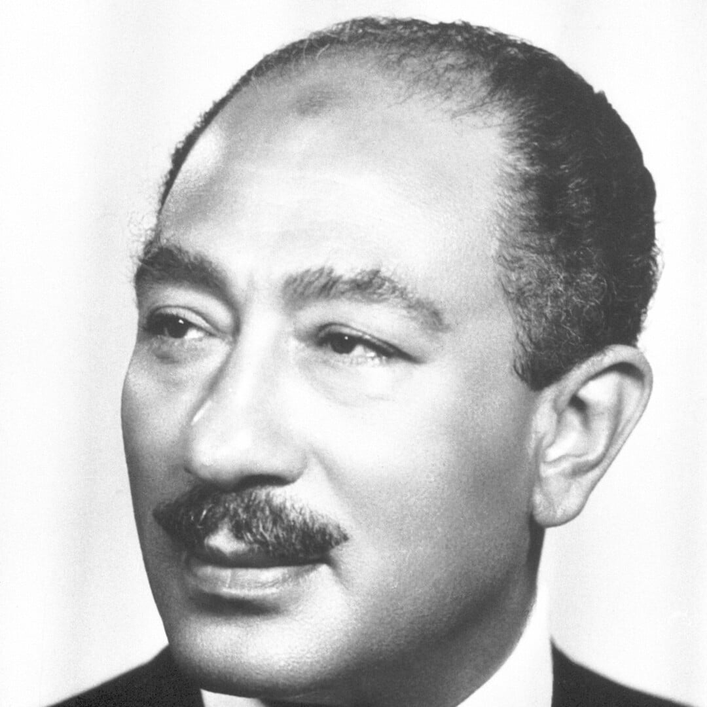
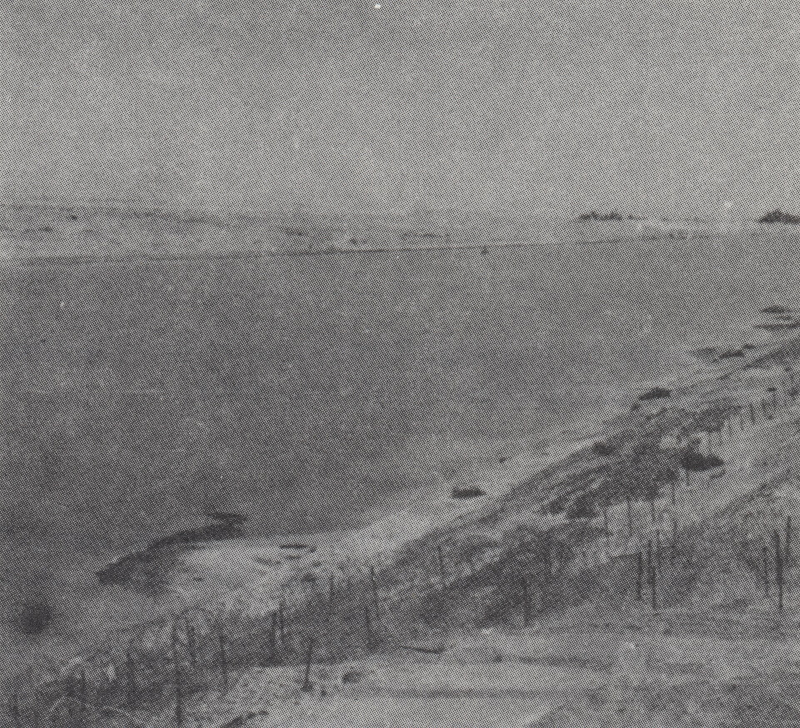
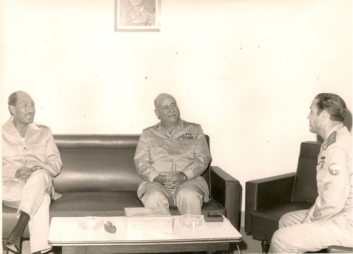
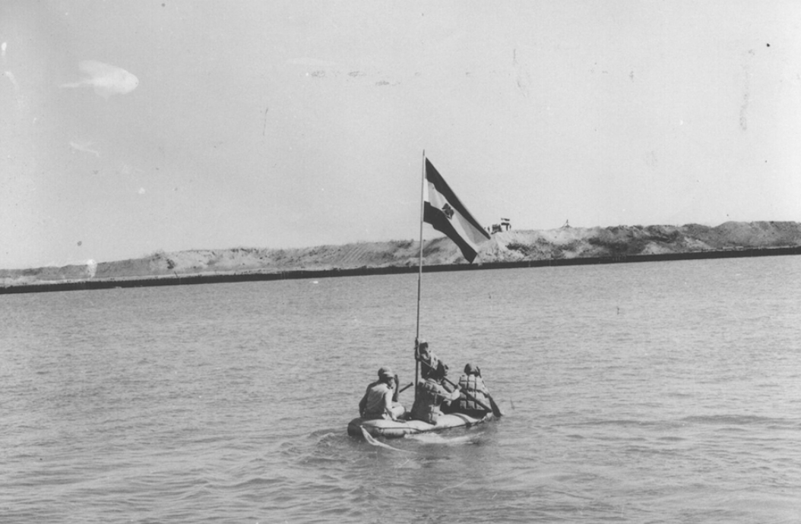
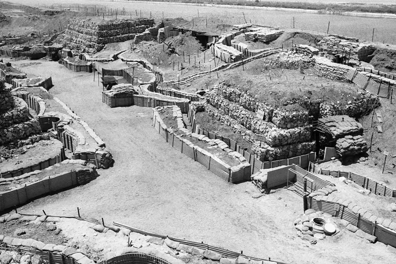
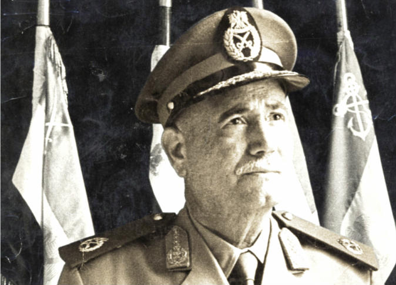
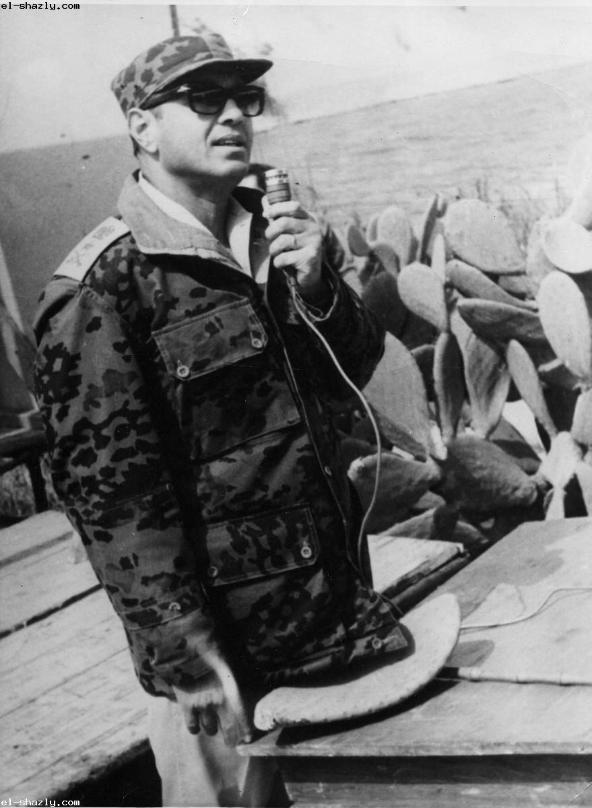
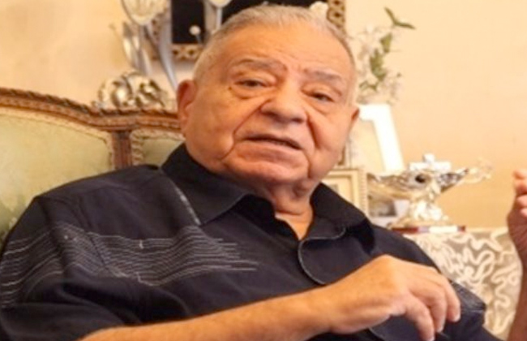

محمد أنور السادات
رئيس جمهورية مصر العربية أثناء الحرب.
اتخذ القرار السياسي بخوض الحرب ضمن هدف استعادة الأراضي المصرية المحتلة، وقاد الدولة خلال مرحلة الحرب وما تلاها من مسار سياسي.
السادس من أكتوبر 1973
في يوم غيّر مجرى التاريخ، عبر الجنود المصريون قناة السويس وحطموا خط بارليف، لتبدأ واحدة من أبرز صفحات التاريخ العسكري المصري الحديث.
6 أكتوبر 1973 · 10 رمضان 1393 هـ

يوم العبور
بداية الهجوم المصري عند الساعة الثانية ظهرًا.
جبهة القتال
قناة السويس وسيناء ضمن أحداث الجبهة المصرية.
الفصل الأول
لم تبدأ حرب أكتوبر من فراغ؛ فقد جاءت بعد حرب يونيو 1967 واحتلال إسرائيل شبه جزيرة سيناء. وخلال السنوات التالية، عملت مصر على إعادة بناء قواتها المسلحة والاستعداد لاستعادة الأرض.
في السادس من أكتوبر عام 1973، شنت مصر وسوريا هجومًا منسقًا على القوات الإسرائيلية في سيناء وهضبة الجولان. واختير التوقيت لتحقيق عنصر المفاجأة والاستفادة من ظروف العمليات.
لم تكن المعركة مجرد مواجهة عسكرية، بل كانت اختبارًا للتخطيط والتدريب والتنسيق بين القوات، ومحطة مهمة في مسار الصراع العربي الإسرائيلي.

حقق الهجوم عنصر المفاجأة، وبدأت القوات المصرية عبور قناة السويس تحت غطاء جوي ومدفعي، ثم عملت على إنشاء رؤوس كباري شرق القناة وتثبيت مواقعها على الضفة الشرقية.
الفصل الثاني
كان خط بارليف، الممتد على الضفة الشرقية لقناة السويس، من أبرز العقبات أمام القوات المصرية. وشمل تحصينات وساترًا ترابيًا مرتفعًا صُمم لتأخير العبور وإعاقة تقدم القوات.
واجه المهندسون العسكريون هذا التحدي باستخدام مضخات المياه عالية الضغط لفتح ثغرات في الساتر الترابي، بدلًا من الاعتماد على وسائل تقليدية أبطأ في إزالة الرمال.
وفي الوقت نفسه، عبرت القوات القناة باستخدام وسائل العبور المتاحة، وأُنشئت الكباري اللازمة لنقل الأفراد والمعدات والإمدادات إلى الشرق.

ارتبط اسم اللواء المهندس باقي زكي يوسف باقتراح استخدام خراطيم المياه القوية لإزالة أجزاء من الساتر الترابي. وأسهمت هذه الفكرة في تسهيل فتح الممرات أمام القوات المصرية.

الفصل الثالث
وراء كل مرحلة من مراحل الحرب قيادات وضباط ومهندسون وجنود، أدوا أدوارًا مختلفة في التخطيط والتنفيذ والعبور. وفيما يلي نماذج من الشخصيات المرتبطة بأحداث الحرب.

رئيس جمهورية مصر العربية أثناء الحرب.
اتخذ القرار السياسي بخوض الحرب ضمن هدف استعادة الأراضي المصرية المحتلة، وقاد الدولة خلال مرحلة الحرب وما تلاها من مسار سياسي.

وزير الحربية والقائد العام للقوات المسلحة خلال الحرب.
تولى مسؤولية القيادة العامة للقوات المسلحة في أثناء العمليات، ضمن منظومة القيادة والتخطيط العسكري المصري.

رئيس أركان حرب القوات المسلحة المصرية أثناء الحرب.
كان من أبرز القيادات العسكرية المرتبطة بالتخطيط للعمليات وتنظيم عبور القوات المصرية إلى الضفة الشرقية للقناة.

صاحب الاقتراح المرتبط باستخدام مضخات المياه في فتح الساتر الترابي.
ساعدت الفكرة الهندسية التي ارتبط اسمه بها في التغلب على إحدى العقبات الرئيسية أمام عبور القوات المصرية.
الفصل الرابع
محطات رئيسية تساعد على فهم تسلسل الأحداث خلال حرب أكتوبر وما تلاها من تطورات عسكرية ودبلوماسية.
6 أكتوبر 1973
انطلقت العمليات المصرية عند الساعة الثانية ظهرًا، وبدأت القوات عبور قناة السويس وفتح الثغرات في الساتر الترابي.
7–8 أكتوبر 1973
واصلت القوات المصرية تدعيم مواقعها شرق القناة وتوسيع مناطق وجودها وتأمين عبور الأفراد والمعدات.
14 أكتوبر 1973
شنت القوات المصرية هجومًا شرقًا في محاولة لتطوير الهجوم، وشهد اليوم معارك بالدبابات في مناطق مختلفة من الجبهة.
15–16 أكتوبر 1973
شهدت المنطقة قرب الدفرسوار ومعبر القناة تطورات عسكرية مهمة، وتمكنت قوات إسرائيلية من العبور إلى الضفة الغربية للقناة.
22 أكتوبر 1973
أصدر مجلس الأمن الدولي القرار 338، داعيًا إلى وقف إطلاق النار وتنفيذ القرار 242 وبدء المفاوضات بين الأطراف المعنية. واستمرت المواجهات بعد صدور القرار.
28 أكتوبر 1973
استقر وقف القتال على الجبهة المصرية، وبدأت محادثات الكيلو 101 بشأن ترتيبات وقف إطلاق النار وتوصيل الإمدادات.